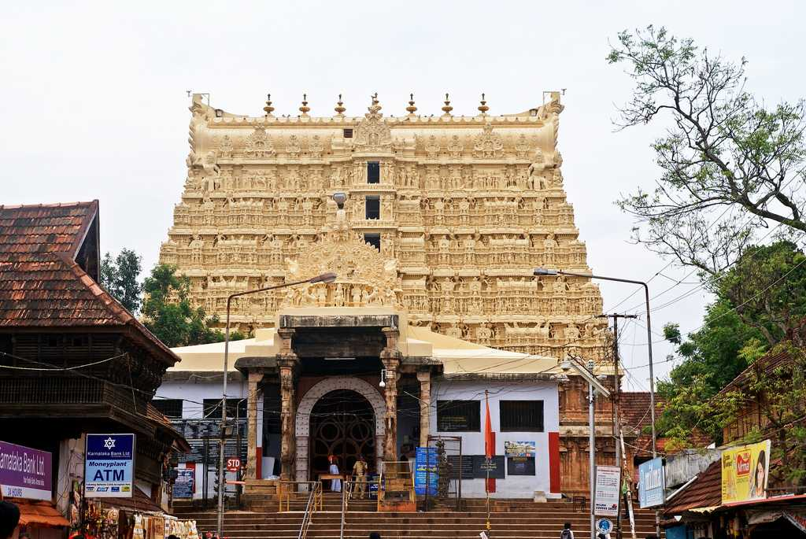

PLACES TO VISIT IN THIRUVANANTHAPURAM
Padmanabhapuram Palace
About 60 km from Thiruvananthapuram, the Padmanabhapuram Palace was once the home of the Royal family of Travancore. The palace, with intricate carvings on wood and other spectacular woodwork is one of the finest examples of the expertise of the artisans of Kerala. Though the palace is now in the State of Tamil Nadu, it is maintained by the Government of Kerala. The ceilings with 90 different floral designs, the windows made of coloured mica, the magnificent Durbar Hall and the Belgian Mirrors will take your breath away.
Napier Museum

Built in the 19th century, the Napier Museum used to display metallic sculptures and some books. A new block was added to the museum in 1880 and now the museum displays bronze idols, ancient ornaments, plastic casts, archeological and historical artifacts, a temple chariot and ivory carvings. Each of the 400 bronze idols has some specialty. There is a bronze statue Lord Vishnu with crystal eyes, a wooden sculpture of Narasimha, 14th century Vijayanagar bronze deities and filigree jewelry. The museum is open from 9 am to 5 pm except on Wednesdays, when it is open from 1 pm to 5 pm. The museum is closed on Mondays.
Padmanabha Swamy Temple

A temple dedicated to Lord Padmanabha, it was renovated by Raja Marthanda Varma in the year 1733. The idol is Lord Padmanabha reclining on Anantha (the thousand headed serpent). The sculpture is about 5.5 m long and one of the largest Vishnu Idols in India. The deity reclines in a large dimly lit room and can be seen through three doors. One door reveals his feet, the other his midriff and the other door shows his chest and face. Non-Hindus are not allowed into the temple.
Peppara Wildlife Sanctuary

Peppara Wildlife Sanctuary declared a sanctuary in 1983, is composed of the dense forests and the Peppara dam built on the Karamana River to increase the drinking water supply to Thiruvananthapuram and the adjoining suburbs. The wildlife sanctuary covers an area of 53 sq.kms. with the reservoir spread in an area of 5.82 sq.kms. The major wildlife species found in the wildlife sanctuary are: tiger, panther, wild dog, lion tailed macaque, elephant, gaur, sambhar, barking deer, mouse, wild boar, Nilgiri langur, Malabar squirrel etc. The bird species especially the water birds like darter, little cormorant, pied king fisher and egrets are most commonly seen in the sanctuary.
Ponmudi
The enchanting hill station of Ponmudi is at a distance of 61 kms from Thiruvanthapuram. Located 915 metres above sea level, its narrow, winding pathways and dark woods make it an exotic location. A multitude of beautiful wild flowers, colourful butterflies, rivulets and springs and the deer park nearby are just some of the reasons for visiting this alluring hill station.
Varkala

Famous for its Papanasam Beach, Varkala is a popular tourist hub. It is also a Hindu Pilgrimage centre as a dip in the waters of this beach is believed to wash away one’s sins. The small beach which is flanked by rocky cliffs on either side doesn’t take long to be explored. Sivagiri Mutt, considered to be the final resting place of spiritual guru, Sree Narayana Guru, is also nearby
Neyyar Dam
Neyyar is known for its dam, lion reserve and wildlife sanctuary. The dam situated on the foot of the Western Ghats is a popular picnic spot. It is at a distance of 30km from Thiruvananthapuram. The lion reserve has boating facilities in addition to a crocodile farm. A mini-sanctuary, the lake garden and a swimming pool are the main attractions here. The Neyyar wildlife sanctuary is spread over an area of 128 sq km. Elephants, sloth bears, jungle cats, nilgiri langurs, wild boars, gaurs and Niligiri tahrs can be spotted here.
Attukal Bhagavati Temple
Attukal Pongala is celebrated between the 18th and 26th of February, every year, at Attukal Bhagavati Temple. It is a ten-day festival. On the 9th day, thousands of women devotees from many parts of the state gather in the temple to prepare ‘pongala’, a dish prepared with coconut, jaggery and banana, as an offering to the goddess. The ritual starts early in the morning and ends by afternoon. The uniqueness of the festival is that only women are allowed to do the offerings on that day.
Kovalam Beach
Just 16 km away from Thiruvananthapuram, the Kovalam Beach is one of the most sought-after tourist destinations in India. The crescent shaped beach is thronged by tourists throughout the year. The palm-fringed shores, the azure seas and the beachside restaurants serving delectable seafood dishes make it the perfect setting for a wonderful holiday.